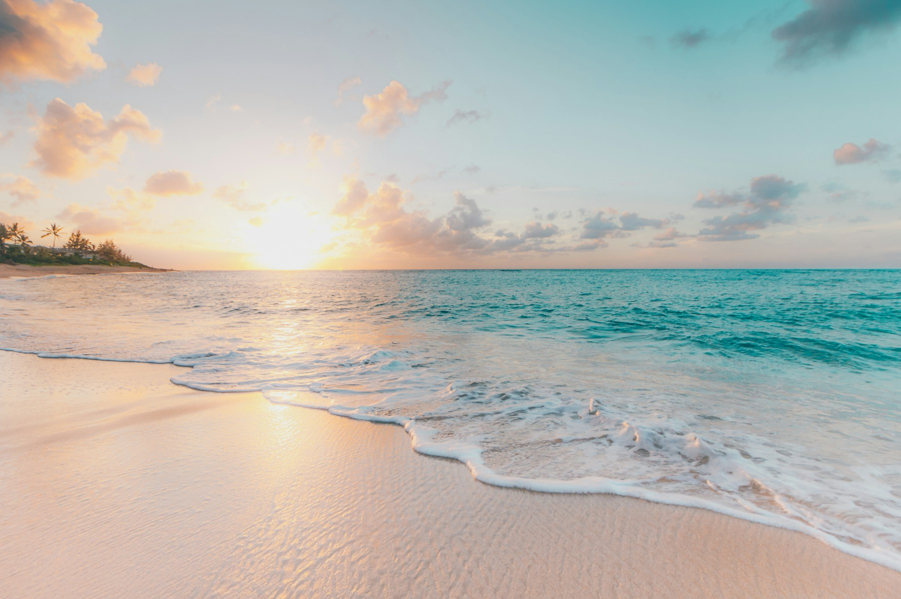

RYUKYU ・ 沖縄料理と泡盛
氷が溶けるまで、
氷が溶けるまで、
ゆっくり。
グラスの底で光が集まっては散る、あの模様です。
波の高さから、光がどこへ集まるかを計算しています。動かすと、水面が揺れます。
SCROLL
ABOUT
お店のこと

沖縄の風と、
人のあたたかさ。
「基本は一生懸命！」を合言葉に、今日も一皿一杯に真心を込めています。
沖縄から直送の食材と、店主が選んだ泡盛。 island time のつもりで、ゆっくりしていってください。
最寄り駅から徒歩1分 ・ 17:00〜翌1:00
AWAMORI
泡盛のこと
島酒
県内40か所以上の蔵から、店主が選んだ銘柄を常時20種。水割り・ロック・お湯割り、 お好みでどうぞ。
古酒（クース）
3年以上寝かせた古酒は、香りがまるく変わります。はじめての方には、 飲み比べの3種セットを。
飲み比べ
3種セット 980円。北から南まで、島ごとの違いをお試しいただけます。
ACCESS
店舗情報
- 店名
- 琉球酒場 なんくる
- 住所
- （架空の住所が入ります）
- 営業時間
- 17:00 − 翌1:00（ラストオーダー 24:00）
- 定休日
- 不定休
- 席数
- カウンター10席・テーブル20席
- お支払い
- 現金・各種キャッシュレス
このページは、Web制作 ゆたか が制作したデザインサンプルです。 掲載している店舗名・住所・電話番号・料金はすべて架空のもので、実在の店舗とは関係ありません。